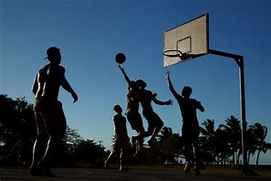
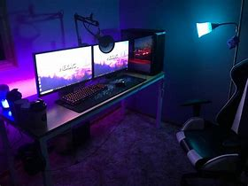
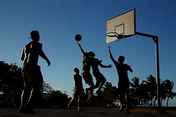
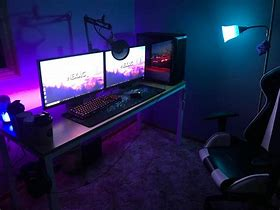

Hi mijn naam is Michael Faerber wat jullie al zouden weten maar hier vertel ik een beetje over mezelf
 



Over mij
De opleiding die ik volg is mavo 4 mijn vakkenpakket is zorg en welzijn ik heb deze gekozen omdat het dichtbij is met de vakken die ik nodig heb om de opleiding software development te volgen De huidige vakken waar ik nu goed in ben zijn biologie , Engels en tekenen de vakken waar ik minder goed in ben zijn Nederlands, rekenen de opleiding die ik nu volg vind ik een paar vakken leuk dat zijn Engels tekenen biologie en gym ik heb niet echt een ervaring in programmeren ik had wel een tijd geleden JavaScript geleerd om een modpack te maken in Minecraft, mijn hobby’s zijn basketbal spelen muziek maken en gamen. Ik heb geen bijbaan maar ga er misschien wel een zoeken, ik ga vaker naar de sportschool en ook basketballen en dit is alles wat ik wou vertellen